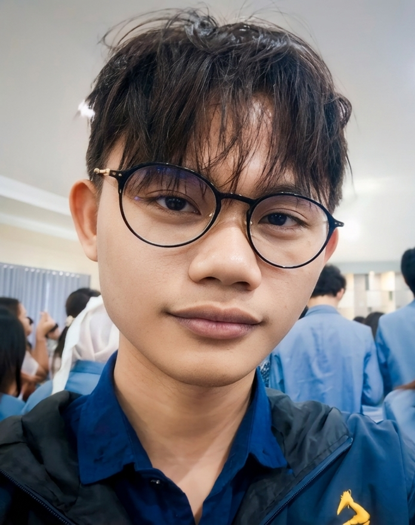

Teknik Informatika — UNSRAT
Timmothea E. O. Landeng
Mahasiswa S1 Teknik Informatika yang aktif mengembangkan proyek mandiri — mulai dari bot automasi berbasis computer vision, market screener kripto real-time, hingga aplikasi Android untuk tracking kebiasaan harian.

Tentang
Latar Belakang
Kuliah
S1 Teknik Informatika, UNSRAT
Mata kuliah favorit
- Struktur Data
- Kecerdasan Buatan
- Basis Data
- Jaringan Komputer
Bidang Minat
Fokus pengembangan dan eksplorasi teknis
Passion utama
- Machine Learning dan data analysis
- Algorithmic trading kripto
- Reverse engineering
- Desktop automation
Proyek yang Pernah Dikerjakan
Kombinasi tugas perkuliahan dan eksperimen pribadi
Beberapa di antaranya: aplikasi habit tracker Android (tugas RPL), market screener bot Telegram untuk Indodax, dan Autostepper — bot automasi game berbasis computer vision. Semuanya masih aktif dikembangkan.
Kompetensi
Kemampuan Teknis
Penilaian berdasarkan pengalaman pengembangan proyek secara mandiri.
| Skill | Kategori | Level | Pengalaman |
|---|---|---|---|
| Python | Bahasa Pemrograman | Cukup mahir | 2 tahun |
| C++ | Bahasa Pemrograman | Dasar | 2 tahun |
| Machine Learning | AI / Data Science | Cukup mahir | 2 tahun |
| HTML dan CSS | Web | Cukup mahir | 2 tahun |
| SQL / SQLite | Database | Cukup mahir | 2 tahun |
| Reverse Engineering | Analisis Sistem | Mahir | 2 tahun |
| Git | Tools | Mahir | 2 tahun |